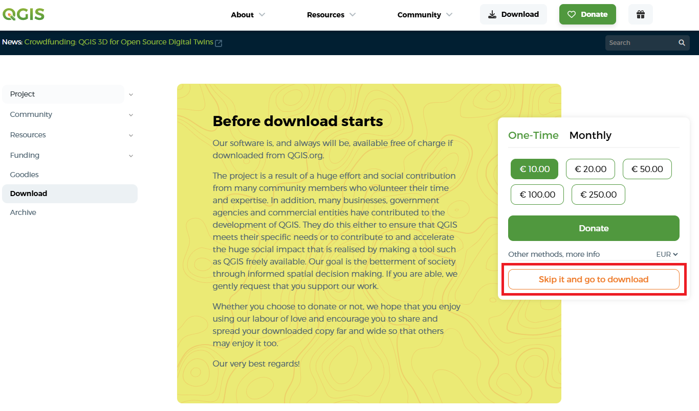
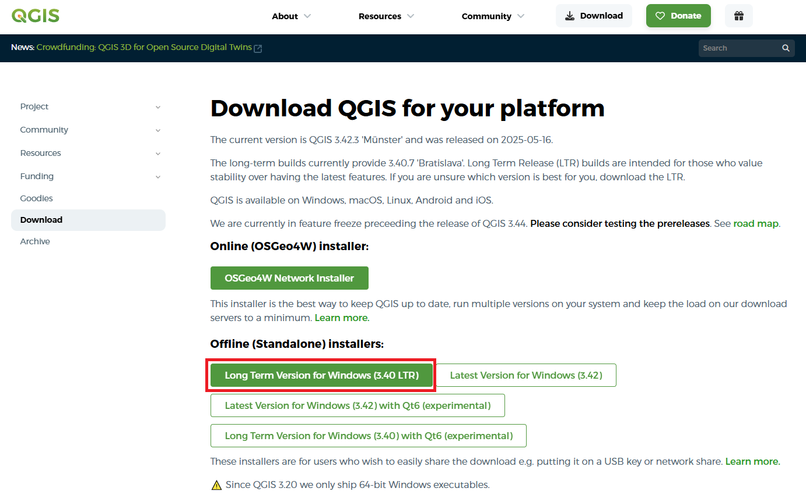
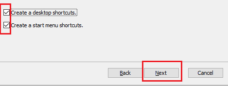
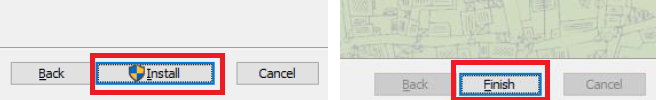

Instalación de QGIS
Para comenzar, accede al siguiente enlace para descargar el software:
Al ingresar a la página, aparecerá una pantalla similar a la siguiente. Si se muestra la opción de donación, haz clic en Skip para continuar.

En esta sección se muestran las versiones disponibles. Selecciona la opción LTR (Long Term Release).
QGIS puede instalarse en diferentes sistemas operativos: Windows, Linux y macOS. En este curso trabajaremos con Windows.
En la siguiente imagen se muestra cómo seleccionar la versión para Windows:

Una vez descargado el archivo, inicia el proceso de instalación. En la mayoría de los casos solo debes hacer clic en Next, aceptar el acuerdo de licencia y continuar.

Es recomendable permitir la creación de accesos directos en el escritorio y en el menú de inicio.
Finalmente, haz clic en Install para iniciar la instalación y en Finish para finalizar el proceso.
